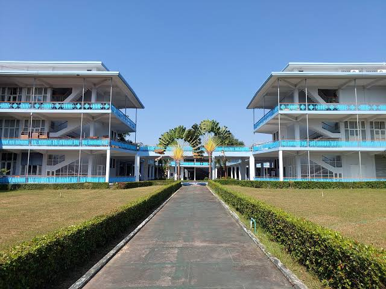
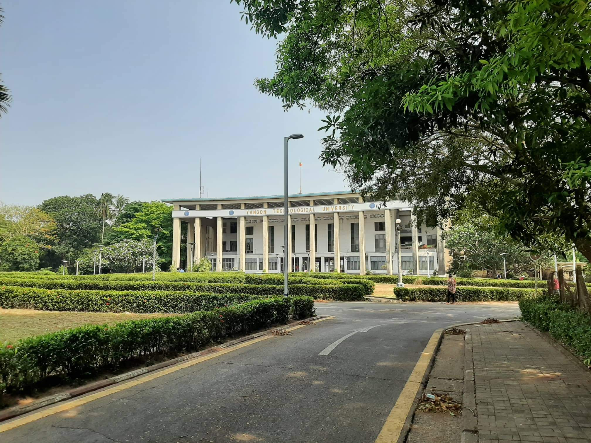
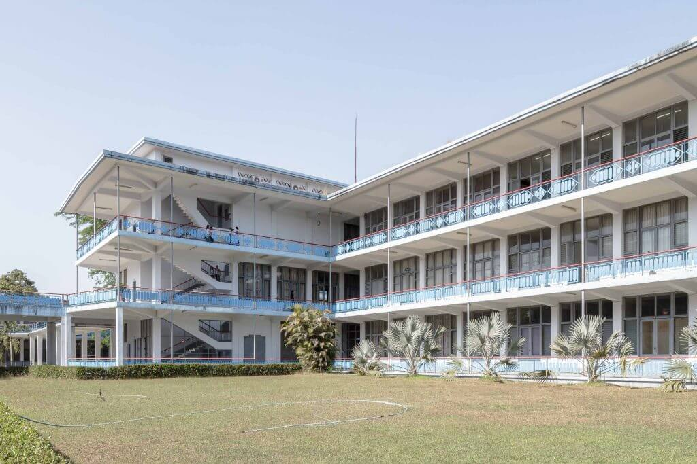

Yangon Technological University
Insein Township, Yangon, Myanmar
Innovation • Technology • Engineering Excellence
About the University
Yangon Technological University (YTU) is Myanmar's premier engineering university. Established in 1924, YTU provides high-quality education in engineering, architecture, and technology while promoting innovation, research, and industrial development. Thousands of engineers have graduated from YTU and contribute to Myanmar's infrastructure and economy.
Address
Yangon Technological University
Gyogone, Insein Township,
Yangon Region,
Myanmar
Admission Requirements
- Passed Matriculation Examination
- Strong Mathematics
- Strong Physics
- Strong Chemistry
- Meet Annual Entrance Cut-off Marks
Facilities
- Engineering Laboratories
- Computer Centers
- Research Laboratories
- Digital Library
- Workshop & Machine Labs
- Student Hostels
- Sports Complex
Engineering Majors In YTU
- 🏗️ Civil Engineering
- ⚙️ Mechanical Engineering
- ⚡ Electrical Power Eng.
- 💻 Electronic Engineering
- 🖥️ Computer Eng. & IT
- 🤖 Mechatronic Engineering
- 🧪 Chemical Engineering
- 🧵 Textile Engineering
- ⛏️ Mining Engineering
- 🛢️ Petroleum Engineering
- 🔩 Metallurgical Eng.
- 📐 Architecture
- 📡 Telecommunications Eng.
- 🌾 Food Engineering
🎓 Degrees Offered
- 🏛️ B.Arch. (Bachelor of Architecture)
- ⚙️ B.E. (Bachelor of Engineering)
- 🎓 M.E. (Master of Engineering)
- 🏛️ M.Arch. (Master of Architecture)
- 🔬 M.S. / M.S. Eng. (Master of Science)
- 📖 M.A. (English for Specific Purposes)
- 🎓 Ph.D. (Doctor of Philosophy)
- 📜 Postgraduate Diploma (PG Diploma)
Lowest Entrance Marks (2025)
(English🌐 + Mathematics🧮 + Physics⚛️ + Chemistry🧪)
| No. | Major | Male | Female |
|---|---|---|---|
| 1. | Civil Engineering | 346 | 339 |
| 2. | Mechanical (Mech) | 333 | 327 |
| 3. | Electrical Power (EP) | 321 | 327 |
| 4. | Electronic (EC) | 329 | 329 |
| 5. | Computer Eng. & IT (CEIT) | 333 | 334 |
| 6. | Mechatronics (McE) | 325 | 326 |
| 7. | Chemical (ChE) | 320 | 325 |
| No. | Major | Male | Female |
|---|---|---|---|
| 8. | Textile (Tex) | 316 | 320 |
| 9. | Mining (Min) | 315 | 320 |
| 10. | Petroleum (PE) | 310 | 320 |
| 11. | Metallurgical (Met) | 315 | 319 |
| 12. | Architecture (Arch) | 333 | 334 |
| 13. | Telecommunications (TC) | 317 | 321 |
| 14. | Food Engineering (FE) | 315 | 320 |
*(Subject to annual changes)*
Campus Gallery



Contact Information
01 651 717
registrar.ytu@gmail.com
Visit Official Website